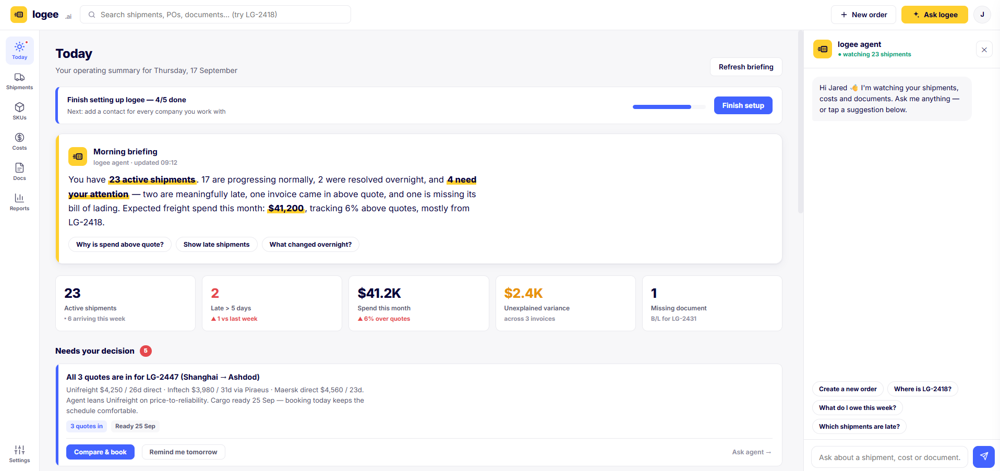

Your agent doesn't miss
what you might
Every order, every day, logee checks the small things that turn into big bills, across six categories most teams only catch by accident, or too late.
Every cut-off, tracked without a spreadsheet
Free time, detention and document cut-offs rarely show up on one calendar. logee checks them against every shipment's real stage, every day.
Free time ending
Flags a container's free time before it runs out, so demurrage never starts because nobody was watching the clock.
Container return due
Tracks the empty-return deadline separately from free time, so detention charges don't creep in unnoticed.
SI, VGM & doc cut-offs
Warns as shipping instruction, VGM and other cut-offs approach, so a booking never gets rolled for a missed paperwork deadline.
Every shift in plan, flagged the moment it happens
Plans change constantly in freight. logee catches the change itself, not just the eventual late arrival.
Vessel delays & rolled bookings
Picks up a delayed vessel or a booking rolled to the next sailing straight from the carrier feed, not from a status-check email.
Every ETA revision
Keeps the full ETA history, not just today's guess, so you can see exactly how many times a date has already slipped.
Stalled at a stage
Flags an order sitting at the same stage longer than that lane usually takes, before it becomes a surprise.
The paperwork that actually blocks a shipment
A missing or mismatched document is usually what turns a normal shipment into a delayed, expensive one.
B/L or telex release
Flags when the bill of lading or telex release isn't in before the vessel arrives, the single most common cause of port storage charges.
Packing list & commercial invoice
Checks that both are on file before they're needed for clearance, not discovered missing at the border.
Details that don't match
Cross-checks figures across the commercial invoice, packing list and B/L, so a mismatch is caught before customs catches it for you.
The real cost, before month-end reconciliation
Freight invoices rarely match the quote exactly. logee checks the gap the moment an invoice lands, not weeks later.
Invoice above quote
Flags the variance line by line, ocean freight, fuel surcharge, handling, storage, so you know exactly which charge moved.
Duplicate or unexpected charges
Catches a charge that shouldn't be there at all, not just one that's higher than expected.
Landed cost as it lands
Rolls up per-order landed cost as invoices arrive, so cash and cost are never a month-end surprise.
Clearance risk, caught before the port does
A hold at customs is expensive in both money and time. logee flags the conditions that usually cause one.
Clearance not lodged
Flags when clearance hasn't been lodged with enough time before arrival, the most avoidable cause of port storage.
Hold or inspection flagged
Surfaces a hold or inspection the moment it's flagged, so you're not finding out from a missed delivery date.
Duty & GST to expect
Estimates the duty and GST an order should attract, so it's a known number going in, not a surprise on the way out.
The chases that fall through the cracks
Most delays aren't caused by freight, they're caused by a reply nobody followed up on.
Forwarder hasn't replied
Flags a thread that's gone quiet for two days, with a drafted nudge ready to send, not a mental note to chase it later.
Supplier payment due
Flags a supplier payment due before release, so a shipment doesn't sit waiting on an invoice nobody actioned.
Weekly digest
What's arriving now and what needs a decision, in one email, so nothing needs the app open to be seen.
Every alert lands in the order thread with the next step attached. Nothing goes out without your permission.
What it looks like when logee catches something
The morning briefing is where all six categories come together, in plain language, every day.

About what logee watches
Does logee replace my forwarder or customs broker?+
No. logee watches your shipments, costs and documents and coordinates with the forwarders and brokers you already use. It drafts messages and flags risks; the people you work with still do the physical forwarding and clearance.
How does logee know about a deadline like demurrage or a document cut-off?+
It reads the booking and carrier data tied to each shipment, container free time, return dates, SI and VGM cut-offs, and checks them every day against the shipment's current stage, flagging anything approaching before it becomes a charge.
Will it send emails to my forwarder without me approving them?+
No. The agent drafts chasers and queries and puts them in the order thread for you to review. Nothing goes out without your approval.
Does it catch cost problems, not just delays?+
Yes. Every freight invoice is checked line by line against its quote as it arrives, so an overcharge or duplicate charge is flagged immediately instead of surfacing at month-end reconciliation.
What if I only care about some of these, like documents but not customs?+
logee watches all of it by default because the categories interact, a missing document often causes a customs delay, which often causes a cost variance. You choose which alerts reach you by email, WhatsApp or the weekly digest in Settings.
Stop finding out the hard way
Connect your inbox and logee starts watching every shipment today. Start free, then upgrade as you grow.